<div class="single-project-section section">
    <div class="container">
        <div class="row single-project-row">
            <div class="col-lg-9 col-md-8 content">
                <div class="project-single-first-box">
                    <div class="project-single-title">
                        <h1>Sixth World E-commerce Site</h1>
                    </div>
                    <div class="project-single-desc">
                        <p>This was done as a student project at General Assembly.</p>
                        <p>A complete redesign of Sixth World Massage Therapy's current website, focusing on
                            design trends and great user experience for Sixth World’s users. </p>
                    </div>
                </div>
                <div class="margin-box">
                    <h2>Overview</h2>
                    <div class="opacity-box">
                        <p>For this project I was tasked to design an online shopping experience for a local business.
                           The design should meet the goals of the persona I’ve chosen (Daniella), the business, and 
                           the brand. I selected Sixth World Massage Therapy. Sixth World is the professional practice 
                           of Jiraiya Addams, a Seattle based licensed massage practitioner. I specifically chose this 
                           website because of the business’ proximity to where I live. The current website needs an 
                           update. Even though the business has a substantial amount of customers affirming the great 
                           quality of massage services it provides, it does not reflect the brand it is presenting in 
                           a meaningful way.
                        </p>
                        <p>For this concept piece, I worked solely for the UX design.
                            </p>
                    </div>
                </div>
                <div class="margin-box">
                    <h3>Duration</h3>
                        <div class="opacity-box">
                            <p>This solo project was completed during a 2-week design sprint. </p>
                        </div>
                </div>
                <div class="margin-box">
                    <h3>Main Problem</h3>
                    <div class="opacity-box">
                        <p>Currently, the Sixth World Massage Therapy website needs an “updating”. It does not have great functionality 
                            for finding and booking massage services and products. It needs love and attention it deserves.</p>       
                        <p>Also, as a one-man small business it’s trying its best to keep the company afloat.</p>            
                    </div>
                </div>
                <style>
                    .threebox figure {
                        padding-right:20px;
                    }
                    .threebox figure:last-child {
                        padding-right: 0;
                    }
                </style>
                
            <h3>Final Design</h3>
                <div class="margin-box">
                        <div class="img-box">
                                <div class="threebox" style="display: flex">
                                    <figure>
                                        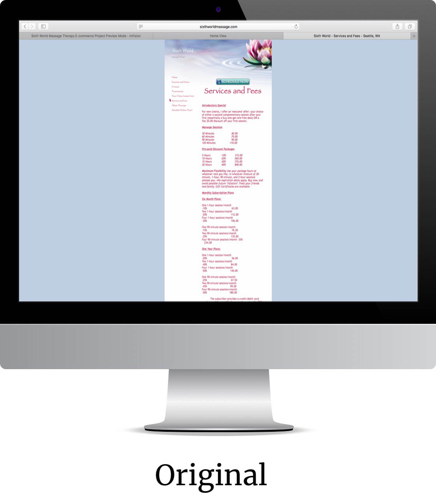
                                    </figure>
                                    <figure>
                                        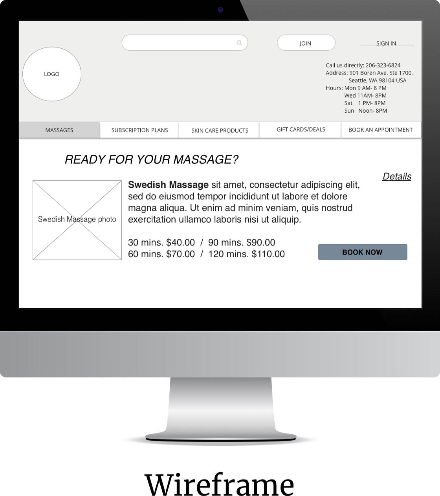
                                    </figure>
                                    <figure>
                                        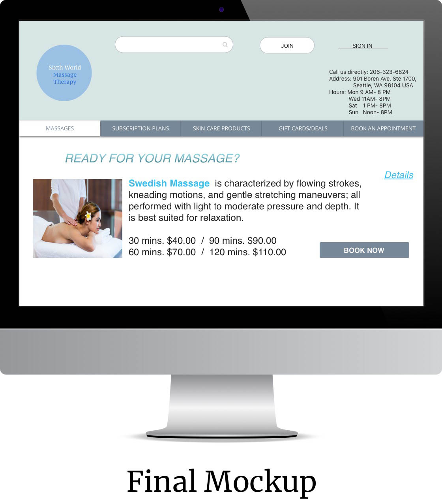
                                    </figure>
                                </div>
                        </div>
               </div>
         <div class="margin=box" >     
            <h3>Process</h3>
                <div class="opacity-box">
                    <ul>
                        <li>Business & Competitor Research</li>
                        <li>Contextual Inquiry</li>
                        <li>Task Analysis</li>
                        <li>Persona & Scenario Development</li>
                        <li>Information Architecture (sitemap, user flow, card sort)</li>
                        <li>Sketching & Testing</li>
                        <li>Digital Wireframes</li>
                        <li>Iterations & Final Prototype</li>
                    </ul>
               </div>                  
        </div>        
        <div class="margin-box">
            <h3>Final Prototype</h3>
               <div class="opacity-box">
                <iframe style="width:100%;height: 50vh" src="https://www.youtube.com/embed/m1TPP1_Ih7o" frameborder="0" allow="autoplay; encrypted-media" allowfullscreen></iframe>
            </div>
            </div>

        <div class="margin-box">
            <h2>Discovery</h2>
                  <div class="margin-box">
                    <h3>Competitive Analysis</h3>
                            <p>I did a competitor research to help me understand better how these businesses 
                                operated in terms of day to day operation and website handling. I identified 3 
                                competitors (2 direct and 1 popular brand for a variation).
                            </p>
                            <p> I compared these 4 businesses according to Key Industry Success Factors and the 
                                esults helped me come up with ideas on how to better the Sixth World Massage 
                                website for customer/user ease of use. Its #6 MOZ Domain Authority for instance 
                                must meant something.
                            </p>   
                            <div class="img-box">
                                <figure>
                                    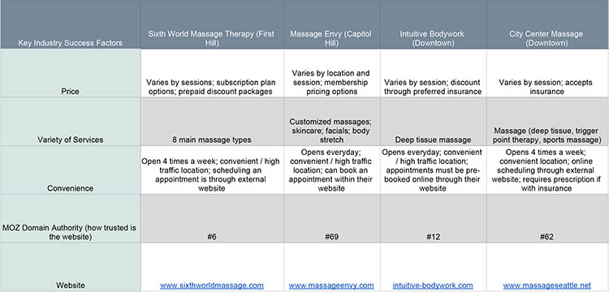 
                                </figure>
                            </div>
                    <h3>Interviews & Task Analysis</h3>
                            <p>I interviewed users ages ranging from upper 30’s, upper 40’s and early 60’s, 3 in 
                                person and 1 over the phone to gain a sense of their online and physical experience 
                                in their decision in selecting a place to have a massage, scheduling an appointment, 
                                purchasing massage related products and overall customer satisfaction.
                            </p>
                                <ol>
                                    <li>What make you decide to go to a specific massage parlor for a service appointment?</li>
                                    <li>What can you say of Sixth World Massage Therapy website?</li>
                                    <li>Where do you navigate to look for a massage service?</li>
                                    <li>What help you decide to pick for that type of massage service?</li>
                                   <li>What would you like to be able to schedule an appointment from this site?</li>
                                    <li>What are your thoughts on having to schedule or make a payment of a massage service through an external website and not in Sixth World Massage’ website?</li>
                                    <li>Where in the site do you expect to see the summary of massage service or product you selected?</li>
                                    <li>What do you think of having photos beside each listed product’s brief description?</li>
                                    <li>After you have booked a massage service online and you want to reschedule it for any reason, how will you do it from this site?</li>
                                   <li>How comfortable are you in booking a massage service or purchasing a product and going through checkout as a guest user?</li>
                                    <li>What can you recommend or any comments about the website in general?</li>       
                                </ol>
                            <p>I also asked each user to pick 2 websites from the competitor list and imagine they were wanting to book a massage appointment,rescheduling it and paying for 
                                the service after . I reminded them to speak out any issues while going through the steps to finish the task.This led to the discovery of any pain points 
                                within the massage type selection, appointment scheduling and checkout process.</p>
                    <h3>Findings</h3>
                            <p>Users like (on competitor's site):</p>
                            <ul>
                                <li>Easy and clean design</li>
                                <li>Straightforward options in booking and purchasing products</li>
                                <li>Updated, high resolution photos</li>
                                <li>Easy to understand navigation</li>
                                <li>Guest checkout</li>
                            </ul>
                            <p>Users dislike (on Sixth World Massage Therapy website):</p>
                            <ul>
                                <li>Red font colors all throughout the site
                                <li>Too small fonts to read</li>
                                <li>Outdated photos</li>
                                <li>Generic website theme</li>
                                <li>Unfavorable impression on the Homepage section</li>
                                <li>“No massage related pictures for each massage type?” (quote from interviews)</li>
                                <li>Confusing Services and Fees page</li>
                                <li>“Why am I being led to schedulicity.com to book an appointment?” (another quote from one of the users)</li>
                                <li>No online payment feature</li>             
                            </ul>
                     <h3>The Challenge</h3> 
                            <p>Based on the findings, the following insights were identified:</p> 
                            <ol>
                                <li>The Sixth World Massage Therapy website needs an updating.</li>
                                <li>It does not have great functionality for finding and booking massage services and products.</li>
                                <li>Customers like to have a pleasant experience in booking, purchasing and checkout as a “guest” and 
                                    not forcing them to create or sign up an account.</li>        
                            </ol>     
                </div>            
        </div>

        <div class="margin-box">
                <h2>Approach</h2>
                      <div class="opacity-box">
                          <p>How do I help solve this problem? I started by picking a persona that will represent my target user, which 
                              would contextualize specific issues and help me come up with 3 user scenarios. Paper sketching possible scenarios, 
                              analyzing the current site map, and making the user flows were next. Testing and iterating my designs followed, 
                              which then helped me in designing low fidelity wireframes in Sketch.
                          </p>
                <h3>Persona</h3>
                    <div class="img-box">
                        <figure>
                            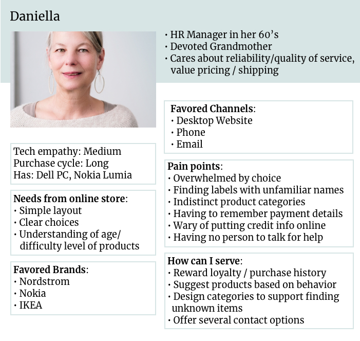 
                        </figure>
                    </div>
                    <ul>
                            <li>Wants a simple layout and clear choices from online store</li>
                            <li>ary of putting credit info online</li>
                            <li>Having to remember payment detail</li>
                            
                    </ul>
                <h3>Scenario Development</h3>
                    <p>The storyboard started with Daniella wanting to get a massage .She likes to pamper herself once in awhile after all 
                        her busy schedule and holiday shopping she’s done lately. A friend from church recommends this great massage place n
                        ar her work. Daniella goes online and searches for the place. She checks the services and fees and tries to schedule 
                        an appointment. Immediately, she’s brought to another website to continue the scheduling. After she picks the kind of 
                        massage and session she prefers, she’s being asked for her email address. She’s overwhelmed with all the steps she has 
                        to go through before she can even book an appointment. She’s also wary of putting her personal info in that scheduling 
                        website. She closes her pc and makes a call. No one’s answering the phone since it isn’t open when she called.
                    </p> 
                        <div class="img-box">
                            <figure>
                                 
                            </figure>
                        </div>  
                    <p>Daniella abandons her quest and left with frustration and more body aches that she can remember.</p>
                    <p>How do I help improve Daniella’s shopping experience considering her online shopping needs? With that in mind, 
                        I designed a solution that would allow her to have a great experience as she goes through the website to look for 
                        massage service and book and pay for it as painless as possible.</p>
                <h3>Sitemap</h3>
                    <p>I made a simple revision of the current sitemap and came up with this:</p>
                    <div class="img-box">
                            <figure>
                                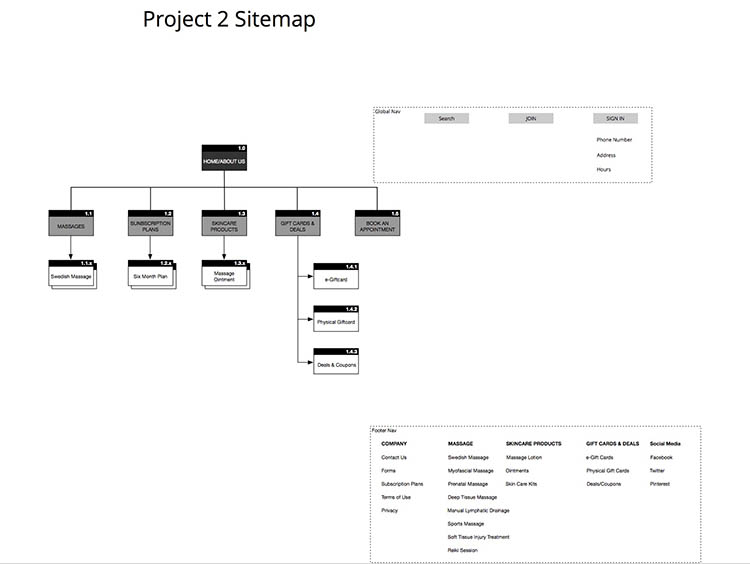 
                            </figure>
                        </div> 
                <h3>User flow</h3> 
                    <p>The one I developed was almost “based on a true story Daniella might be doing. Here it describes the experience 
                        she makes in deciding how to navigate through the site. The flow starts when Daniella is wanting a massage. She 
                        searches online to look for massage parlor nearby. She then looks up for Sixth World Massage Therapy website per a 
                        friend’s recommendation. Next flow focuses on the product/massage types discovery. It is followed by her booking for 
                        an appointment and lastly contacting the business to reschedule the appointment. I realized the flow feels incomplete 
                        without including a simple guest checkout process. I added that. Guest checkout is one of the most liked features per 
                        user interviews I did. The current site does not allow that at all. 
                    </p>
                    <div class="img-box">
                            <figure>
                                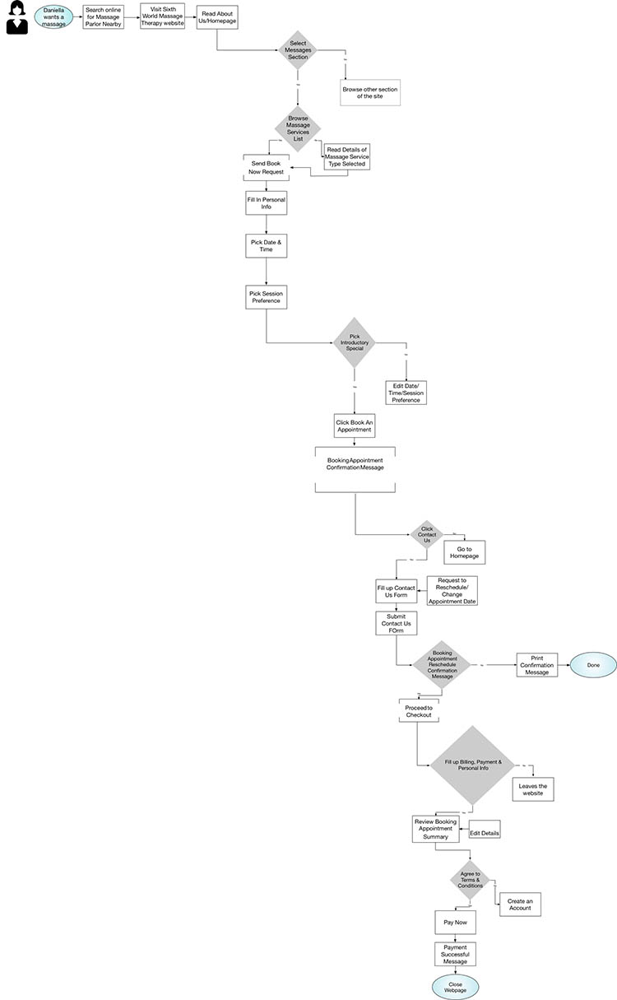 
                            </figure>
                    </div>
                  <h3>Card sorting</h3> 
                     <p>A card sorting was done with a few potential users which led to the creation of their mental model and helped with 
                         information architecture. While observing the users in their approach to arranging and designating, this paved the way 
                         in the recreation of the site’s navigation and sitemap.</p>
                     <p>I wanted to highlight the site organization in general while focusing on the e-commerce solutions as well. The intention 
                         was to help improve some of the issues users mentioned with the present website.
                    </p>  
                    <div class="img-box">
                            <div class="twobox" style="display: flex">
                                <figure>
                                    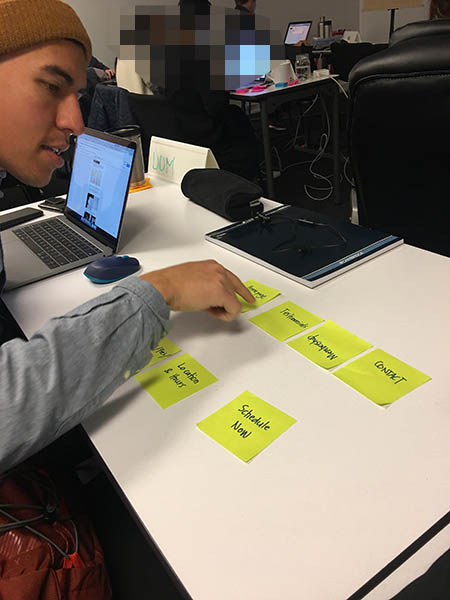
                                </figure>
                                <figure>
                                    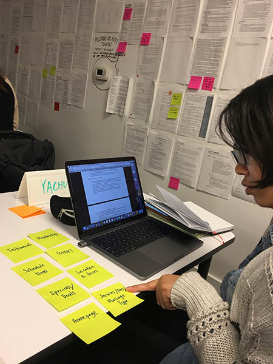
                                </figure>
                            </div>
                    </div>     
            </div>
        </div>

        <div class="margin-box">
                <h2>Design Process</h2>
                      <div class="opacity-box">
                                    <h3>Sketching</h3>
                                    <p>I started with rough sketches. Early design concept was inspired mostly by Massage Envy and a little of Zeel 
                                        and other massage websites but eventually moved to a unique and simplified user experience that Sixth World 
                                        Massage Therapy could embrace.
                                    </p>
                                    <figure>
                                        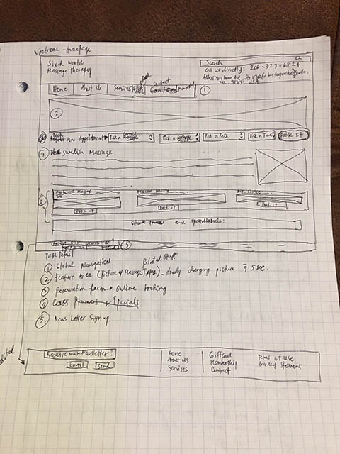 
                                    </figure>
                                    <figure>
                                        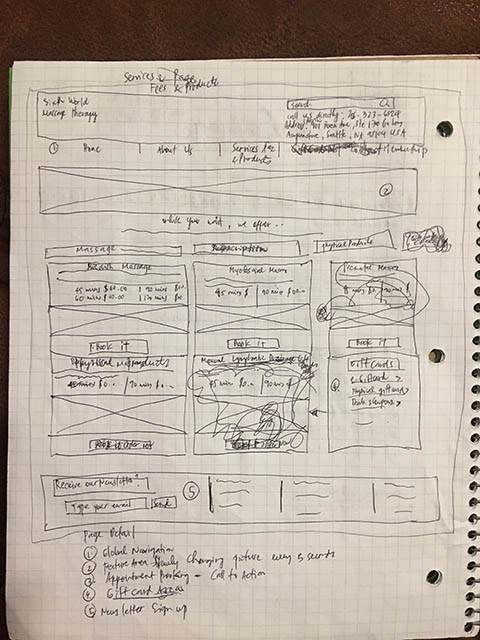 
                                    </figure>
                                    <figure>
                                        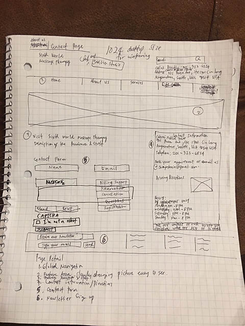 
                                    </figure>
                                    <h3>Digital Wireframes</h3>
                                        <p>When I figured out the primary screens in my sketches, I began converting them into digital wireframes to 
                                            prepare for testing.
                                        </p>
                                        <h3>Primary Screens</h3>
                                            <figure>
                                                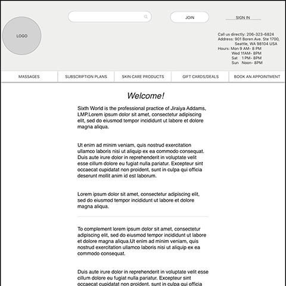
                                                <figcaption>Home</figcaption> 
                                            </figure>
                                            <figure>
                                                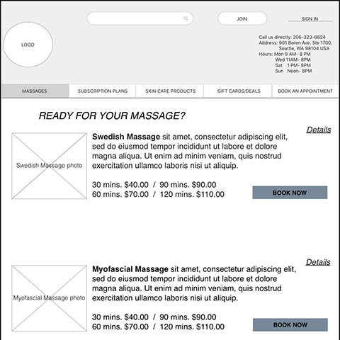 
                                                <figcaption>Massages List</figcaption>
                                            </figure>
                                            <figure>
                                                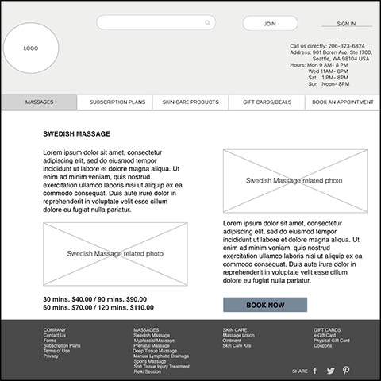
                                                <figcaption>Product Details</figcaption> 
                                            </figure>
                                            <figure>
                                                    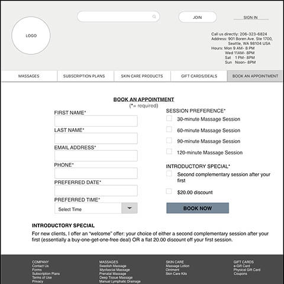
                                                    <figcaption>Book An appointment</figcaption> 
                                            </figure>
                                            <figure>
                                                    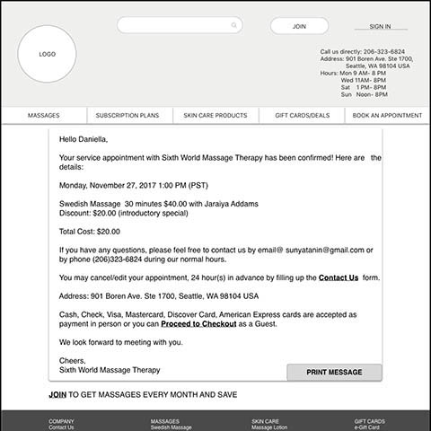
                                                    <figcaption>Booking Confirmation Message</figcaption> 
                                            </figure>
                                            <figure>
                                                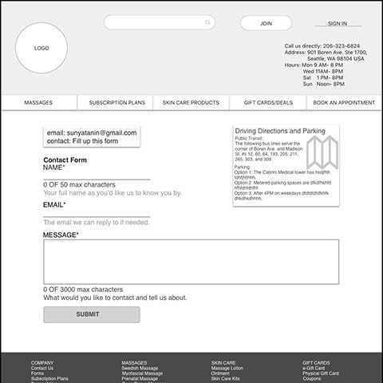 
                                                <figcaption>Contact Us</figcaption>
                                            </figure>
                                            <figure>
                                                    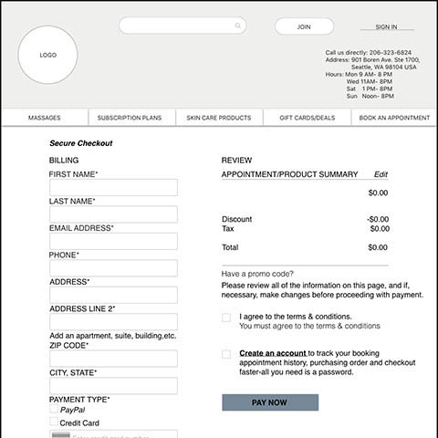
                                                    <figcaption>Guest Checkout</figcaption> 
                                            </figure>
                                            <figure>
                                                    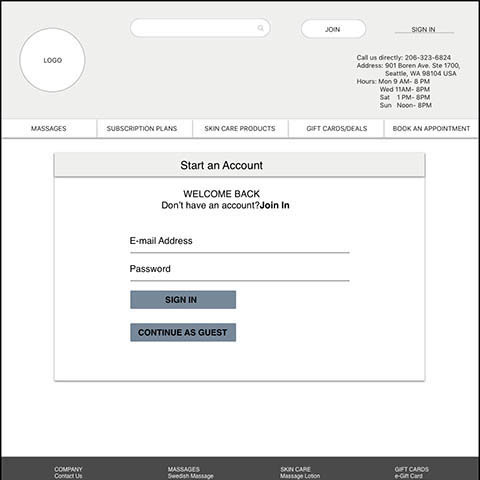 
                                                    <figcaption>Sign In</figcaption>
                                            </figure>
                                            <figure>
                                                    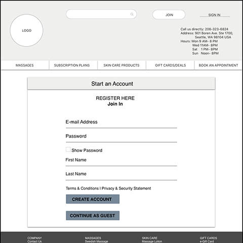
                                                    <figcaption>Join In/Register</figcaption> 
                                            </figure> 
                                        <h3>Product Discovery Flow: Round One</h3>
                                            <figure>
                                                 
                                            </figure>
                                            <figure>
                                                 
                                            </figure>
                                            <figure>
                                                 
                                            </figure>
                                            <p>Product Discovery Flow. 1.) Home Screen 2.) Upon clicking “Massages” in the primary 
                                                navigation, Massages page will display 3.)When clicking “Details” in the upper 
                                                right corner of each massage type listing, details/description page will show up
                                            </p>
                                        <h3>Iterations: Product Discovery Flow Round Two</h3>
                                            <p>Price and Session preference were missing in the product detail page. “Book Now” 
                                                button was way too far to the bottom right of the product detail page. These were 
                                                some of the pain points my users encountered in testing this section. I made the 
                                                necessary changes.These were actually good suggestion of the users as affirmed by 
                                                my research.Price and button matter.Price has been named as the most important 
                                                factor affecting the online purchasing decision by the 60% of all online shoppers 
                                                worldwide. This number is even higher in emerging eCommerce markets. As for button, 
                                                tiny mistakes can cost business dearly- in fact one poorly  designed button might 
                                                cost $300 million as the Jarod Spool mentioned.
                                            </p>
                                            <figure>
                                                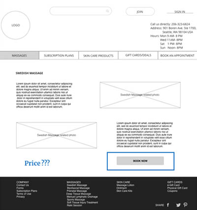 
                                            </figure>
                                            <figure>
                                                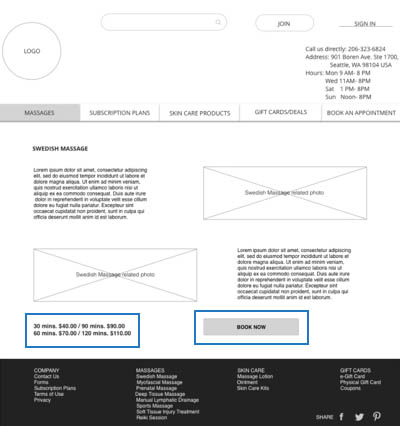 
                                            </figure>
                                         <h3>Iterations: Font Size Is Way Too Small Too Read </h3>
                                            <p>One of the users I tested mentioned that reading through the Homepage especially was 
                                                a little hard to read because the texts were too small. Going back to my persona, 
                                                this would not go well with Daniella. I adjusted it to readable size. Making this 
                                                adjustments was also understanding my target audience, the message I was trying to 
                                                communicate, and what I wanted them to do amongst other things. Font size impacts 
                                                both accessibility and usability.
                                            </p>
                                            <figure>
                                                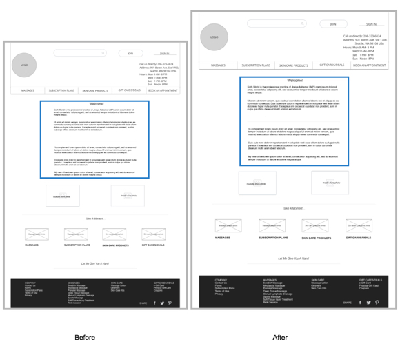 
                                            </figure>
                                         <h3>Iterations:Booking Confirmation Message Hard to Read Because Of Dark Fill Color </h3>
                                            <p>Designing the Booking Confirmation page to make it personalized and customized was 
                                                one thing. Reading and understanding the message was another. One of the test 
                                                participants commented that reading through the booking confirmation page might 
                                                not be a good experience because of the dark fill color I’ve chosen. Contrast fail.
                                                Sticking  to white and calm colors always stood out. It is worthy to note that even 
                                                though this was a minor change, color is an important form of communication. It can 
                                                sway thinking, change actions, and cause reactions.
                                            </p> 
                                            <figure>
                                                 
                                            </figure>
                                         <h3>Iterations:Missing Input Pop Up Screen Lacks Empathy</h3>
                                            <p>The importance of the URL in the pop-up screen was questioned by one of my users. It 
                                                was also mentioned that the message prompt was unfriendly and too demanding. I made 
                                                some updating by removing the URL  and rephrased the message to a more empathetic 
                                                way by adding “Please”.
                                            </p>  
                                            <figure>
                                                 
                                            </figure>
                                        <h3>Visual Mockup</h3>
                                            <figure>
                                                 
                                            </figure>
                                            <figure>
                                                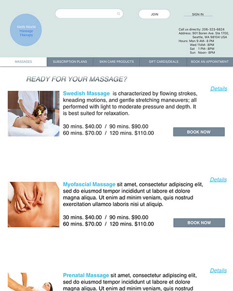 
                                            </figure>
                                            <figure>
                                                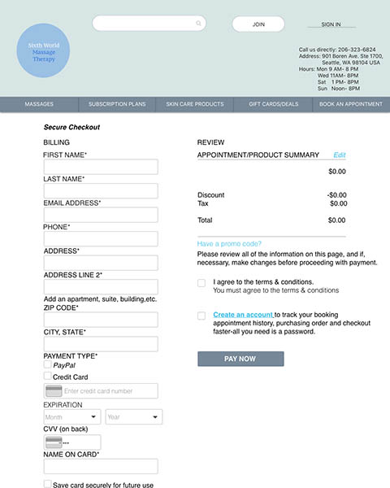 
                                            </figure> 
                     </div>
        </div>

        <div class="margin-box">
                <h2>Action Plan & Reflections</h2>
                      <div class="opacity-box">
                          <p>Doing this project was a humbling learning experience for me. Every step of the UX process is equally 
                              important to the others.Without a solid UX design process, a designer could be completely moving in 
                              the dark. A clear and concise UX process, on the other hand, makes it possible to craft amazing 
                              experiences for users.Here are some of the takeaways:
                          </p>
                           <ul>
                                <li>User research plays an important role in User experience. It helps in thoroughly understanding 
                                    the users, assessing how well a designer is serving their needs, and uncovering opportunities to 
                                    create something even better. If given a chance to test more users to learn more about their 
                                    motivations and preference in using Sixth World Massage Therapy’s website, I’ll gladly do it.</li>
                                <li>SKETCHING is to die for. Even Leonardo Da Vinci had to sketch out his inventions before he started
                                     to build them. It is easy to come up with any design idea, but the challenging part is understanding 
                                     how that idea will take shape in user experience design. Rapid prototyping specifically paper 
                                     prototyping was helpful. Several tweaking were done with the sketched out paper prototype as it was 
                                     easy to make changes. From that point on, I was able to spend more time digitizing my frames using 
                                     InVision which was also neat and more efficient as I was going through that stage.</li>
                                <li>Lastly, my action plans include testing more users and improving the visual aspect for the rest of 
                                    the screens. I would also want to link the unexplored screens to the ones I made. I’ll spend time 
                                    structuring content of the remaining pages/screens.</li>  
                           </ul>
                        </div>
        </div>
                <div class="margin-box">
                    <blockquote>
                        Most people make the mistake of thinking design is what it looks like. People think
                        it’s this veneer – that the designers are handed this box and told “make
                        it look good”. That’s not what we think design is. It’s not just what it
                        looks like and feels like. Design is how it works.
                        <span>Steve Jobs, US computer engineer &amp; industrialist.</span>
                    </blockquote>
                </div>               
            </div>
            <div class="col-lg-3 col-md-4 hidden-sm hidden-xs sidebar-wrapper">
                <div class="sidebar-form">
                    <div class="margin-box">
                        <h4>Need UX design help?</h4>
                        <div class="opacity-box">
                            <p>Are you working on something similar? I would love to help make it happen!
                                Just send me your e-mail and we will discuss your project together.</p>
                        </div>
                    </div>
                    <div class="form-wrapper">
                        <form id="sidebar-form" novalidate>
                            <div class="form-group">
                                <label for="sidebar-name">Name</label>
                                <input type="text"
                                        class="site-input name-input"
                                        id="sidebar-name"
                                        placeholder="Your name"
                                        required
                                        data-validation-required-message="Invalid input">
                                <p class="help-block"></p>
                                <p class="help-block-success">done</p>
                            </div>
                            <div class="form-group">
                                <label for="sidebar-email">E-mail</label>
                                <input type="email"
                                        class="site-input email-input"
                                        id="sidebar-email"
                                        placeholder="Contact e-mail"
                                        required
                                        data-validation-email-message="Invalid input"
                                        data-validation-required-message="Invalid input">
                                <p class="help-block"></p>
                                <p class="help-block-success">done</p>
                            </div>
                            <div>
                                <input class="site-btn btn-theme-blue" type="submit" value="Send message">
                            </div>
                        </form>
                    </div>
                </div>
            </div>
        </div>
    </div>
</div>
